Manual
VNL-1 is a lo-fi hip hop machine for the M-VAVE FM-1. It writes and plays its own songs, one after another. Each song has its own key, tempo, chords, layout and band: drums, bass, accompaniment, lead, pad and texture. You can leave it running, or steer it from the FM-1's knobs and buttons. Every change to the song lands on its next four-bar line, in time.
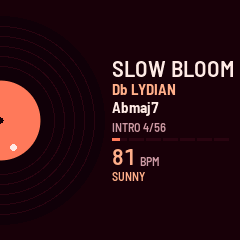
1Getting started
VNL-1 has two pieces: the firmware and the sample bank. The sample bank holds the sampled instruments (piano, nylon guitar, electric guitar, jazz guitar, cello, harp and the two room kits). It lives in a part of the flash that a firmware update doesn't touch, so you write it once, and again only when a release says the samples changed.
Try it first: the browser emulator runs the same code, with sound, played with the mouse or the computer keyboard.
Install from the browser: in Chrome or Edge, connect the FM-1 by USB and open the installer. Choose "Firmware and sample bank" the first time, then press Install. The browser asks once to allow MIDI: allow it. Don't unplug the cable while it writes.
Install from a terminal: from the source, with a Python that has mido and python-rtmidi:
python3 base/tools/fm1_install.py vnl-1-VERSION.fwsc
python3 tools/fm1_bank.pyWrite the bank while VNL-1 is running and stopped. If it's playing, the screen says STOP FIRST and nothing is written. When the bank is written, the screen says SAMPLES WRITTEN.
Without the sample bank: VNL-1 still works. At power-on and as each song starts, the screen says NO SAMPLES, SYNTHS ONLY, and every part plays a synth or modeled instrument instead. Write the bank to get the sampled ones.
Back to the stock firmware: the installer's last section writes M-VAVE's own firmware back.
2How VNL-1 plays
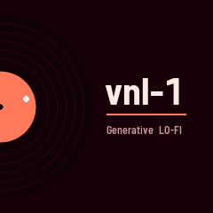
At power-on the splash shows for about a second while the record spins up, then the home screen. Press any control to skip it. VNL-1 starts stopped, with a song ready. Press PLAY.
- Songs: each song has a layout of sections (intro, grooves, a lead section, breaks, an ending). When a song ends, 2-4 seconds of silence follow, then the next song starts.
- Changes wait for the line: a knob or button that changes the song doesn't act at once. The change lands on the song's next four-bar line. Until then the screen shows the new value with a
*in front, in yellow, and a note such as TEMPO 84 IN 1 BAR. Mutes, solos, levels and the Sections screen's Loop and Stay on song act at once; a move for the section's end (K3, or F#3) waits for the last bar of the section playing instead. While a section loops (or Stay on song goes back), a change due at the line where the song goes back lands as it starts again. - Stop and play: PLAY stops the music at once. PLAY again continues the same song from the start of the bar it stopped in.
- A new song: SEQ rolls a new song. While playing, it comes after the usual silence. While stopped, it waits, ready, until you press PLAY.
- While stopped: the knobs don't change the song. Start it first.
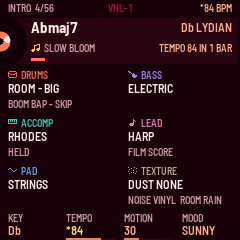
3Controls on every screen
These work the same on every screen, unless a screen below says otherwise.
| Control | What it does |
|---|---|
| PLAY | Play or stop. |
| SEQ | A new song. On a part's screen, it re-rolls only that part. Hold it to lock a part or the song line (see Locking). |
| HOME | Go to the home screen. On the main screen and the now-playing screen, it switches between the two. |
| SEL | The Sections screen. SEL again goes back. |
| ARP | The Parts screen. ARP again goes back. |
| FX | The Mixer. FX again goes back. |
| GLO | The Settings screen. GLO again goes back. |
| F, G, A, B, C (the five lowest white keys) | Drums, bass, accompaniment, lead, pad. Press to mute that part; press again to unmute. Hold to solo it; press again to unsolo. Not on the Sections screen, where the keys jump. |
| F# (the lowest black key, F#3) | The move for the section's end, as the Sections screen's K3 sets it: each press the next, a simple stutter, a complex one, the drum fill, the comp fill, then off; the screen reader says each (STUTTER SIMPLE, STUTTER COMPLEX, DRUM FILL, COMP FILL, OFF). See Sections for where it lands. A press while stopped queues one for when the song plays. Works on every screen, the Sections screen too. |
| G (the top white key, G5) | Hold it while a song plays to stutter the whole mix. On the next 16th it catches an 8th of the music and repeats it; on each beat after that the repeat gets faster (16ths, then 32nds, then 64ths, where it stays) and a little darker. Let go and the music comes back on the next 16th. The screen shows STUTTER (the screen reader says it). The song's own stutters and a queued one wait while you hold it; a hold leaves a queued move as it is. Works on every screen, the Sections screen too; does nothing while stopped. A tap does nothing more. |
| Key lights | A part's key is lit while the part plays, dark while it's muted, and blinks while it's soloed. F#3 blinks while a move for the section's end waits, and goes dark once it has played. |
| MASTER | The volume. |
| SAVE | On the Song screen, saves the song (see Saving songs). Anywhere else, shows a line of measures for a moment (the screen's redraw time, the CPU guard's level and steps, late audio blocks); on the Song screen, hold SAVE for them. Useful in a bug report. |
No key plays notes: VNL-1 plays its own songs. The keys not in this table do nothing.
4The screens
The home: now playing or main
VNL-1 has two home screens. The main screen shows everything and starts the most. The now-playing screen is the simple one. HOME on either switches to the other. Which one is the home is a setting: Settings (GLO), HOME SCREEN, SIMPLE (now playing, the default) or DETAILED (the main screen). The FM-1 starts there after the splash, and each new song and HOME from any other screen go there. The FM-1 keeps the setting through a power-off. (It saves the choice once the music is silent, so the save never interrupts the audio.)
Now playing (top of this manual): the record turns while a song plays and eases to a stop when it stops. Beside it: the song's layout name, its key and scale, the chord playing, the section and bar, a strip with a segment for each section, the tempo and, on its own line under the tempo, the mood.
The main screen
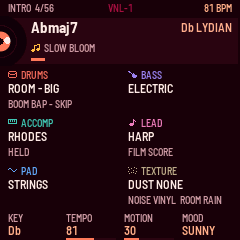
- Status bar: the section, the bar and the song's length in bars, LOOP while a section loops, and the tempo.
- Record: half of the now-playing screen's record, smaller, at the song tile's left edge; it turns while a song plays and eases to a stop when it stops.
- Song tile: the chord playing, the key and scale, the layout name, a change on its way, and a strip of the song's sections.
- Part tiles: drums (kit and pattern), bass (instrument), accompaniment (instrument and rhythm), lead (instrument and style), pad (instrument) and texture (dust, noise and room). Each in its own color.
- Knob strip: K1-K4 and their values, with a fill bar each.
| Control | What it does |
|---|---|
| K1 | Key: up or down a semitone. |
| K2 | Tempo: 70 to 90 BPM. |
| K3 | Motion: from calm (0) to busy (100), in steps of 5. |
| K4 | Mood: sad, wistful, warm or sunny. |
| ALGO or SELECT | Move the highlight through the song tile and the part tiles. |
| EDIT | Open the highlighted tile's screen. |
| PRESET | The highlighted part's instrument (the drums' kit). Past the last one it goes round to the first, and back. Nothing on the song or texture tile. |
| OCT- / OCT+ | The highlighted part's register: the accompaniment's or the lead's. |
| SEQ, held | Lock or unlock the highlighted part, or the song line on the song tile (see Locking). A short press is a new song. |
| HOME | The now-playing screen (the home stays as Settings has it). |
Sections (SEL)
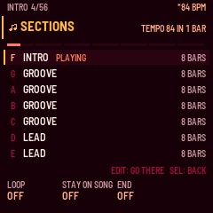
The song's sections, one a line, with their lengths. The section playing is marked PLAYING. Each line starts with the letter of the key that jumps to it. Seven lines fit; a longer song scrolls with the highlight.
| Control | What it does |
|---|---|
| ALGO or SELECT | Move the highlight. |
| EDIT | Jump to the highlighted section. |
| The white keys from F up (F G A B C D E F G A) | Jump straight to the first to tenth section. The playing section's key is lit; a jump on its way blinks. |
| K1 | Loop: the section playing repeats instead of moving on. Turn either way to switch it. |
| K2 | Stay on song: the song never ends. Where the ending would start, it goes back to the section after the intro. Off by default. |
| K3 | End: queue a move for the last bar of the section playing. Turn left for the accompaniment's fill (COMP FILL), further for the drums' (DRUM FILL); right for a simple stutter (STUTTER SIMPLE), further for a complex one (STUTTER COMPLEX); back to the middle (OFF) cancels it. One at a time: a new choice replaces the one waiting. It shows until the move plays, then OFF. F#3 steps it too, on any screen. |
| SEL | Back. |
The stutter: at the end of some groups (the last bar of a 4- or 8-bar group), the whole mix catches a slice of itself and repeats it into the next downbeat. A simple one (beat 4's first 8th repeated, or a 16th roll across beat 4) comes about once a song; a complex one (beat 4 rolling from an 8th through a 16th to 32nds, or a 2-beat catch from beat 3) about every other song, never twice. They come in any groove or lead section, with the lead or without it, never in an intro, an ending or a break, and not in the song's first 8 bars of lead, or of the first section without it. K3 (or F#3, on any screen) adds one of your own, on the last bar of the section playing, as the fill below: in place of the song's own stutter there, even where the song wouldn't stutter. Queued once it would have started in that bar (beat 4, or beat 3 for the 2-beat catch), it waits for the next section's last bar. Never in the ending; with no section's end left before it, it is dropped. Holding G5 overrides both: a song's stutter whose bar the hold touches is skipped, and one of yours that the hold keeps from playing waits for the next section's last bar (F#3 keeps blinking meanwhile).
The fill: the song plays a drum fill of its own at some section changes. K3 (or F#3) adds one where you want it, on the last bar of the section playing: the drums play their fill on beat 4 (a snare roll getting louder, a kick on its "and"), or the accompaniment plays one from beat 3, pushing into the next section. A guitar plays the drive strum (down on the "a"s, up on the "and"s); the piano, Rhodes, felt piano, vibes, organ, pad and harp run up the chord they are playing, one note an 8th, each ringing into the change; a strummed harp strums like the guitars. Only that bar's drums or accompaniment change; everything else in the song stays as it was. The fill plays even on a drum drop (the roll comes in out of the silence) or in a section without the drums or the accompaniment. Queued once that bar's fill has started (the drums' beat 4, the accompaniment's beat 3), it waits for the next section's last bar. Never in the ending; in the intro it's fine. With Loop on, it lands at the end of the section looping. A fill or a stutter waiting stays queued through Loop, Stay on song and a jump to another section. Only one waits at a time.
Parts (ARP)
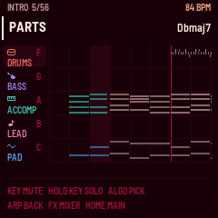
A lane for each part: drums, bass, accompaniment, lead and pad, with the key that mutes it. Each lane shows the part's notes over eight bars, scrolling with the song. Notes already played are in the part's color.
| Control | What it does |
|---|---|
| ALGO or SELECT | Pick a lane. |
| K1 | Mute the picked part (again: unmute). |
| K2 | Solo the picked part (again: unsolo). |
| ARP | Back. |
Mixer (FX)

A fader for each part: drums, bass, accompaniment, lead, pad and texture. The levels go from -12 to +6 dB and stay as you set them from song to song. The knob that moves a fader is named under it.
| Control | What it does |
|---|---|
| K1-K4 | Page 1: the drums', bass's, accompaniment's and lead's levels. Page 2: K1 the pad's, K2 the texture's. |
| SELECT or ALGO | The other page. |
| FX | Back. |
Settings (GLO)

THEME works: with it highlighted, turn any of K1-K4 to step through the screen's color themes (GARNET, the default: coral on a red-black; then GARNET+, BLACK CHERRY, the black ones GREEN, AMBER, CYAN, RED and MONO, then ESPRESSO, TEAL, OLIVE, PLUM, PLUM+, OXBLOOD and OXBLOOD+). Every screen changes at once, the splash too. The device keeps the theme through power-off (written once nothing is playing, as the home is) and a USB backup holds it.
BASS SATURATION works: ON (the default) gives every bass but the sub its gentle harmonics, so the line carries on small speakers; OFF leaves the bass clean, for good speakers, where the harmonics can sound buzzy. Highlight it and turn any of K1-K4 to switch it. The bass changes at its next note (never in the middle of one, so it never clicks), and the device keeps the setting through power-off, as it keeps the theme.
HOME SCREEN works: SIMPLE (the default) makes the now-playing screen the home, DETAILED the main screen. The home is where the FM-1 starts after the splash, where each new song lands and where HOME goes from any other screen. Highlight it and turn any of K1-K4 to switch it; GLO then goes back to the new home. The device keeps it through power-off, as it keeps the theme, and a USB backup holds it.
The rows under NOT WORKING YET are planned for a later version and do nothing yet. GLO goes back.
| Control | What it does |
|---|---|
| SELECT, PRESET or ALGO | Moves the highlight between THEME, BASS SATURATION and HOME SCREEN. |
| K1-K4 | Changes the highlighted setting: the next theme (turned back, the one before), bass saturation on or off, or the home screen SIMPLE or DETAILED. |
| GLO | Back. |
5The parts' screens
Open a part's screen from the main screen: highlight its tile with ALGO, then press EDIT. Each screen shows the part's name and page, then a row for each knob: its name, its value, and a bar. A hint line at the bottom names the buttons.
On every part's screen:
| Control | What it does |
|---|---|
| K1-K4 | The settings on this page (below). Most step through choices; AS ROLLED is the song's own choice. A re-roll setting (variation, line, voicings, phrase, notes) steps through new versions of the part; its first value, ORIGINAL or AS ROLLED, is the song's own. |
| SELECT | The next page, on parts that have more than one. |
| ALGO | The next part, in this order: song, drums, bass, accompaniment, lead, pad, texture. |
| PRESET | This part's instrument (the drums' kit). |
| SEQ | Re-roll this part only, on the next four-bar line. On the song screen, a new song; on the texture screen, nothing. Held, it locks or unlocks this part; on the song screen, the song line (see Locking). |
| OCT- / OCT+ | The register, on the accompaniment's and the lead's screens. |
| EDIT | Back to the main screen. |
Locking
A locked part stays as it is when a new song rolls, while everything else changes. Lock a part you like, then press SEQ for new songs around it. The song line locks too: the key and scale, tempo, motion and mood.
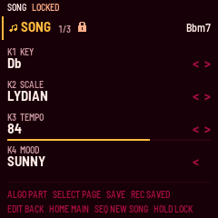
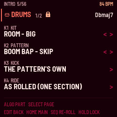
- Lock or unlock: hold SEQ for about half a second, on the part's screen or on the main screen with the part's tile highlighted. For the song line, hold it on the Song screen or with the song tile highlighted. Hold again to unlock. A short press still re-rolls the part (on its screen) or rolls a new song (on the main and Song screens).
- Shown: a padlock beside the part's name on its screen and on its tile on the main screen (the song line's on the song tile and beside SONG). The header says DRUMS LOCKED or DRUMS UNLOCKED for a moment, and the screen reader says it too.
- What it keeps: - Drums: kit, pattern, kick, ride and variation. - Bass: instrument and line. Its style (roots, walking, pedal) can still change with the song. - Accompaniment: instrument, rhythm (strum pattern and fill too), voicings, register, and whether a busy lead thins it. - Lead: instrument, style, phrase, register and loop. - Pad: instrument, on or off, place and notes. - Texture: dust, noise and room. - The song line: key and scale, tempo, motion and mood. The chords, layout, swing and chord color still change, to ones that suit the kept scale and mood.
- Changing a locked part: the knobs still change it, and the lock keeps the change. SEQ on its screen won't re-roll it: the header says DRUMS IS LOCKED.
- Instruments that can't be shared: the felt piano, the piano and the vibes play one part a song, and organ keys never play under an organ pad. When a new song would clash with a lock, VNL-1 rolls another one. If both clashing parts are locked, the second one's instrument isn't kept for that song, and the header says LEAD LOCK, INSTRUMENT NOT KEPT (or PAD LOCK).
- How long: until you unlock it or switch the FM-1 off. Locks are never saved.
Song
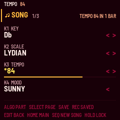
| Page | K1 | K2 | K3 | K4 |
|---|---|---|---|---|
| 1 | Key: 12 keys | Scale: six modes, from Ionian to Aeolian | Tempo: 70-90 BPM | Mood: sad, wistful, warm, sunny |
| 2 | Motion: 0-100, calm to busy | Swing: 52-62 % | Layout: Classic, Slow bloom, Straight in, Breather or Drift | Chords: the chord progression, by number and its chords |
| 3 | Chord color: 7ths, 9ths or rich (9ths, 11ths, 13ths) |
A change of layout or chords is a bigger change than the others. It still lands on the next four-bar line.
On the Song screen (every page), besides the controls above:
| Control | What it does |
|---|---|
| SAVE | Save the song into the first free slot. The header says SAVED TO 3 for a moment. |
| SAVE, held | The line of measures (what SAVE shows on other screens). A hold never saves. |
| REC | The Saved list (see Saving songs). |
Saving songs
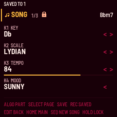
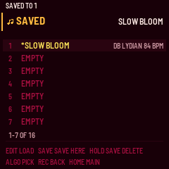
VNL-1 keeps 16 songs. A saved song comes back exactly as it was: its seed and every rolled choice (key, scale, tempo, motion, mood, swing, layout, chords, chord color, the band's set, drum pattern, texture, length), and every change you made to its parts (instruments, kit, rhythms, styles, registers, re-rolls). A change still waiting for its four-bar line is saved as if it had landed.
- Save: press SAVE on the Song screen. The song goes into the first free slot; the header says SAVED TO 3. The same song saved again goes back into its own slot. With all 16 slots full, the header says NO FREE SLOT: delete one first.
- The Saved list: press REC on the Song screen (REC again goes back). Each line shows the slot, the song's name (its layout), its key and scale, and its tempo, or EMPTY. ALGO or SELECT moves the highlight.
- Load: highlight a song and press EDIT. It becomes the next song: while a song plays, that song gives way and the saved one starts after the usual short gap; when stopped, it is ready and PLAY starts it. The header says SLOT 3 IS NEXT.
- Save into a chosen slot: on the Saved list, highlight a slot and press SAVE. A song already there is replaced.
- Delete: on the Saved list, highlight a song and hold SAVE. The header says SLOT 3 DELETED.
- While a song plays: the FM-1 writes its memory only when everything is quiet (writing it while music plays makes a crackle). A song saved while music plays shows at once, in yellow with a
*, and is written as soon as the music stops (or at the silence between two songs). One save can wait at a time: a second one into another slot says A SAVE WAITS, STOP TO SAVE MORE. Don't switch the FM-1 off before the save is written. - What isn't saved: the locks, mutes, solos and mixer levels, and the Sections screen's Loop and Stay on song switches, and a fill or stutter queued with K3 or F#3.
- Over USB: a backup holds the saved songs and the home screen (see USB and the screen reader).
tools/fm1_songs.py listtags each song[flash](written, kept through power-off) or[RAM only: ...](not yet written: its save waits for silence, or its write failed and needs saving again). - Firmware updates: a VNL-1 update (
fm1_install.pywith a VNL-1 package) keeps the saved songs. Going back to M-VAVE's stock firmware erases them (it takes that part of the memory for its own).tools/flash.sh, which installs stock first, exports the songs before it starts (intobackups/) and writes them back at the end.
Drums
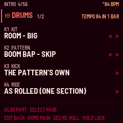
| Page | K1 | K2 | K3 | K4 |
|---|---|---|---|---|
| 1 | Kit: Soft brushes, 808, CR-78, Crunchy machine, Boom-bap machine, Jazz machine, Room - big, Room - brushes (a new song lands on it only when its mood is sunny; any other mood plays Soft brushes in its place; picked here, it plays in any mood) | Pattern: three boom bap patterns, two half-time, a sparse one, brushes, a two-bar half-time | Kick: the pattern's own, or one of nine two-bar kick phrases | Ride: as rolled, none, throughout, or one section (the sampled kits) |
| 2 | Variation: a re-roll of the drums' details |
Bass
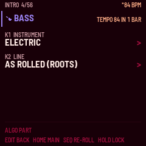
| K1 | K2 |
|---|---|
| Instrument: electric, sub, triangle or FM | Line: a re-roll of the bass line |
Every bass but the sub is gently saturated, so its line carries on small speakers; the sub stays clean. On good speakers you can turn the saturation off: Settings (GLO), BASS SATURATION.
Accompaniment (ACCOMP on the screen)
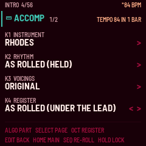
| Page | K1 | K2 | K3 | K4 |
|---|---|---|---|---|
| 1 | Instrument: Rhodes, felt piano, nylon guitar, pad, vibes, organ, piano, electric guitar, harp | Rhythm: held, half notes, stabs, held on 2, held on 2 and 4, charleston, tresillo, late one, strum | Voicings: a re-roll of the chord voicings | Register: down an octave, as rolled, up an octave |
| 2 | Strum fill: default, step back or drive (the guitars' strums) | Busy lead thins: on or off. On, the accompaniment plays less while the lead is busy | Over a low lead: as rolled, lift over it or with the lead (the jazz guitar's and the cello's sets) |
With a guitar on the accompaniment, Rhythm picks a strum pattern instead: D-DU-UDU, chuck, bossa, ballad, offbeat-skank, syncopated-push, anticipation or charleston. OCT- and OCT+ step the register too.
The harp strums in half its songs (ballad, bossa or charleston, each stroke a quick roll up the strings) and rolls held or half-note chords in the rest; every roll is centered on the beat, its first notes a little ahead. Its Rhythm offers held, half notes and strum (the strum's pattern is drawn). The harp plays the accompaniment or the lead in a song, never both.
Over a low lead (the jazz guitar or the cello), the accompaniment either lifts an octave while the lead plays or stays in its own register with the lead, leaving out a note and dipping under it where the lead sounds. A song rolls with the lead three times in four; Over a low lead forces either.
Lead
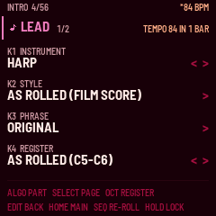
| Page | K1 | K2 | K3 | K4 |
|---|---|---|---|---|
| 1 | Instrument: felt piano, flute, vibes, piano, jazz guitar, cello, harp, whistle | Style: Impressionism, Romanticism, '60s Jazz, Modal Jazz, Jazz-Hop, Film Score, Bossa Nova, Ambient | Phrase: a re-roll of the lead's motif | Register: down an octave, as rolled, up an octave |
| 2 | Loop: default, off or on. On, the lead loops its motif the way a producer loops a sample |
The lead plays in the song's lead sections. It states a motif and comes back to it. OCT- and OCT+ step the register too.
Pad
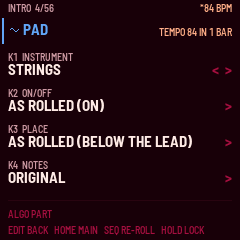
| K1 | K2 | K3 | K4 |
|---|---|---|---|
| Instrument: organ, strings, pad or vox | On/off: as rolled, off or on. About two songs out of three have a pad | Place: as rolled, below, with or above the lead | Notes: a re-roll of the pad's notes |
Texture
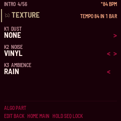
| K1 | K2 | K3 |
|---|---|---|
| Dust: none, light, medium or heavy | Noise: none, vinyl or tape surface | Ambience: none or rain |
The noise bed fades in as a song starts and out as it ends.
6The CPU guard
The FM-1 has a fixed amount of processing time for each slice of sound. A busy moment, such as many notes ringing over a full kit, can run past it, and the sound drops out for an instant. The CPU guard prevents that. When VNL-1 falls behind, it lowers the quality one step at a time, in the order a lo-fi mix hides best:
- The drums' ringing tails end sooner.
- The noise bed (vinyl, tape, rain) fades out.
- The plate reverb stops taking new sound and lets its tail ring out.
- Released notes on the accompaniment, pad and lead fade sooner.
- The accompaniment holds three notes instead of four (the bass still has the root).
It acts only after the sound actually falls behind, not on a guess. After 20 seconds of calm it takes back one step, then another every 2 seconds, so the quality returns gradually. Most songs never need it. SAVE shows its level.
7USB and the screen reader
USB audio: over the USB cable the FM-1 is also a sound card. A computer can record what VNL-1 plays: choose the input named "VNL-1 FM-1".
Screen reader: VNL-1 tells a screen reader what's on its screen, through the FM-1 Screen Reader: each screen as it opens, each knob's new value, and messages such as NO SAMPLES. The browser emulator does the same.
Backup: fm1-base's backup page (or tools/fm1_backup.py) saves the saved songs and the home screen to a .vnl1songs file on a computer, and restores them. Stop the music first: a restore is refused while anything plays. tools/fm1_songs.py lists, exports and writes single saved songs over USB.
No Bluetooth: VNL-1 is built without Bluetooth, so there is no Bluetooth MIDI or audio.
8Safe mode and update mode
Safe mode: if the FM-1 fails to start twice after an install, it shows SAFE MODE. There is no sound, but USB works, so the web installer can reach it. Install again, or put the stock firmware back from the same page. PLAY tries the firmware again. If safe mode fails twice too, the FM-1 waits in the chip's own update mode.
Update mode: hold REC while you switch the FM-1 on. With m-bootloader installed (the web installer offers it), the installer reaches the FM-1 from there, and holding PLAY instead opens m-bootloader's recovery menu. Without it, REC starts the chip's own update mode, which only the rescue tool reaches (base/bsp/tools/fm1_rescue.sh, described in the README).
9Troubleshooting
No sound: turn MASTER up. Check the five lowest keys' lights: a dark key is a muted part, a blinking one is soloed (and the others are silent). Press PLAY if the screen says STOPPED.
A knob did nothing: the change is waiting for the next four-bar line; the * and the yellow note show it. While stopped, the knobs don't change the song: press PLAY first.
NO SAMPLES, SYNTHS ONLY: the sample bank isn't on the FM-1, or it's from another build. Write it again (section 1).
STOP FIRST while writing the bank: VNL-1 was playing. Press PLAY to stop it, then write again.
BROWSER on the screen: the workbench in a browser has the controls (section 10). The FM-1 is silent and its own controls do nothing. Close the workbench's connection; 3 seconds after the browser lets go, the screen says BROWSER DISCONNECTED and VNL-1 waits, stopped, until you press PLAY.
The installer doesn't find the FM-1: use Chrome or Edge, a USB cable that carries data, and allow MIDI when asked. Close other programs that use the FM-1's MIDI port.
The FM-1 doesn't start after an install: see section 8.
10The workbench
The workbench is a page for developers and the curious, run from the source (workbench/README.md). It plays the same song engine in the browser, with every decision laid out by part, a piano roll of what each part plays, and a mock of the FM-1's screens that runs the same screen definitions as the device. With an FM-1 connected by USB (Chrome or Edge), the FM-1's controls can drive the mock; while they do, the FM-1 shows BROWSER and stays silent.